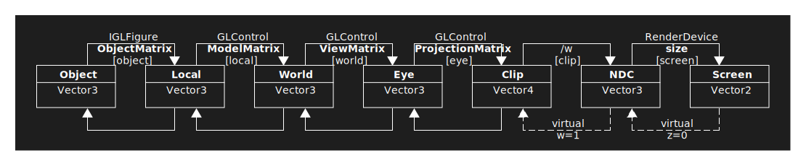

netcore-opengl
.NET core opengl
- Introduction
- Quickstart
- Build solution
- Examples
- Development key notes
- Unit tests
- How this project was built
- References

Introduction
netcore-opengl library provides a multiplatform framework for 3D rendering, visualization and interactions.
The library is composed by following modules:
| module | framework | dependencies | description |
|---|---|---|---|
| core |
NET Standard 2.0 | netcore-ext, netcore-sci, System.Drawing.Common, Silk.NET, Magick.NET, SkiaSharp.HarfBuzz, netdxf-devel0 | gl calculations, render abstraction over Silk.NET opengl library. |
| gui |
NET Standard 2.0 | core, Avalonia, netcore-desktop | desktop gl widget |
| shapes |
NET Standard 2.0 | core | box, cone, sphere, arrow shapes |
| nurbs |
NET Standard 2.0 | core, G-Shark | nurbs figures |
Quickstart
dotnet new console --use-program-main -n sample
cd sample
dotnet add package netcore-opengl-gui
dotnet add package netcore-opengl-shapes
code .
# accept to install vscode required assets
edit Program.cs as follows ( consider to create a separate global usings.cs file ):
namespace sample;
// quickstart
using Vector3 = System.Numerics.Vector3;
using Color = System.Drawing.Color;
using SearchAThing.OpenGL.Core;
using static SearchAThing.OpenGL.Core.Constants;
using SearchAThing.OpenGL.GUI;
using static SearchAThing.OpenGL.GUI.Toolkit;
using SearchAThing.OpenGL.Shapes;
class Program
{
static void Main(string[] args)
{
// this must called for console application to enable Avalonia framework
// and must called before any other Avalonia control usage
InitAvalonia();
// create standalone Avalonia window for Silk.NET opengl rendering
var w = GLWindow.Create();
// define the GLModel build function
w.GLModel.BuildModel = (glCtl, isInitial) =>
{
if (!isInitial) return;
var glModel = glCtl.GLModel;
// clear the model
glModel.Clear();
// place a point light at xyz=(2,2,2)
glModel.PointLights.Add(new GLPointLight(2, 2, 2));
// create and add a sphere centered at (0,0,0) with radius=1 and meshed as uvsphere with N=20 divisions
var sphere = new UVSphere(center: Vector3.Zero, radius: 1);
glModel.AddFigure(sphere.Figure(divisions: 20).SetColor(Color.Cyan));
// place a base box which receive sphere shadow centered like the sphere but 2*z lower ( out of sphere )
// with size xyz=(5, 5, .1f) larger than sphere but with small thickness
var basebox = new Box(cs: WCS.Move(sphere.Center - Vector3.UnitZ * 2), csSize: new Vector3(5, 5, .1f));
glModel.AddFigure(basebox.Sides);
glCtl.CameraView(CameraViewType.Right);
};
// show the gl window
w.ShowSync();
}
}
dotnet run # or hit F5 from vscode
results ( control can manipulated with gestures ):

Build solution
cd netcore-opengl
# git submodule update --init
dotnet build
Examples
Running examples from console
cd netcore-opengl
dotnet run --project examples/example-0000
Running examples from vscode
cd netcore-opengl
code .
C-S-p -> NET: Generate Assets for Build and Debug
choose an example.
Tip: to change startup example from bash ./set-startup-example xxxx where xxxx is the nr of one of the examples provided.
This will update .vscode/launch.json then hit F5 to start.
List of examples
Click on the example code link to open source code of the example, read top tour instructions contained in each example to test functions, for example following in the top comment of example 0000:
// example-0000
// draw a triangle with 3 colors (one for each vertex)
//
// use gesture such as:
// - 'w' to toggle wireframe
// - ctrl right/left to change tilt
// - mouse wheel to zoom
// - 'z' to zoomfit
// - ctrl + x to show bbox
Code: 0000
Draw a triangle with 3 colors (one for each vertex).

Code: 0001
Random lines ( console program ).

Code: 0002 (mvvm)
Random lines ( avalonia AXAML program ).

Code: 0003
Render stl terrain map varying vertex colors by height ; presence of a point light makes shadows.

Code: 0004
Draw text.

Code: 0005
Draw box with keyboard face toggler.

Code: 0006
Draw nurb surface with triangles normal and animation, layout loaded from saved file.

Code: 0007
Draw nurb tube with triangle selection on click through raycast in perspective mode; generate gl split layout programmtically generated.

Code: 0008 (mvvm)
Draw nurb tube with lighting tunable from mvvm interface.

Code: 0009
Generate two captures of different sizes from the same scene.
Code: 0010
Draw 3d shapes on a textured cube face.

Code: 0011
Texture, light and text transparency.

Code: 0012
Show text alignment types with their bounding box.

Code: 0013
Multiline text.

Code: 0014
Scalability benchmark for text.

Code: 0015
Raycast in orthogonal mode for snapping test.

Code: 0016 (mvvm)
Invalidate control on vertex change.

Code: 0017
Figure using screen coord.

Code: 0018
Illusion of rotating base box model while its the camera that's rotating around. A small box rotates using object matrix in all scenes ; show camera frustum.

Code: 0019 (mvvm)
Sphere vertex render and hittest scalability test.

Code: 0020
Customize key gesture.
Code: 0021
Use of raycast to pick vertexes and define a new ucs.

Code: 0022
Nurb surface join on two tubes.

Code: 0023
Show 1-D fem element displacement using. Dependency: BriefFiniteElement.

Code: 0024
Show 3-D fem element displacement with countour and legend visible only in one of the split views using control and figure custom tag data. Dependency: BriefFiniteElement

Code: 0025
Nurb surface intersection generating nurb curves using FeasibleTriIntersectionTests extension method.

Code: 0026
Shows 2 triangle intersection and SimpleCmd management.

Code: 0027
Shows earth representation through a textured uv sphere.

Development key notes
Most of technical documentation is directly integrated with API documentation.
Coordinate spaces

- Object, Model, View and Projection matrixes are used by the gl pipeline at the vertex shader set gl position.
- Clip, NDC and finally Screen spaces are handled by the gl pipeline as further stages where size of render device was set by the gl control render.
- Forward and backward coordinate transform can be done through provided core helper functions; these methods exists to preview gl transformations done by the gpu on client side and are used forwardly by the zoomfit in compute screen bbox or in the backward case to detect local point from screen through local ray cast.
GL Dev inspect tool
Hit F1 gesture to open gl dev tool useful to understand how conversion translates between spaces; it provides some basic support such as:
- show render count
- show/edit GlView title
- toggle control perspective, shadow, texture, wireframe, shade with edge, show normals
- override light ambient, diffuse, specular strength
- change fovdeg, show camera coordinates and frustum
- toggle autoadjust near/far with near,far edit
- show bbox size and model/view/projection matrixes
- add, remove, set position, color of lights

Primitives, figures interaction
Selection and coord identify
| cursor | type | hotkey | description |
|---|---|---|---|
 |
normal | s |
Normal pan/zoom/rotate gestures. |
 |
primitive | s |
Primitive selection toggler. |
 |
figure | s |
Figure selection toggler. |
 |
identify | i |
Identify coord. |
Removal
Select a primitive/figures then hit d key to delete from the model.
SimpleCmd
Each primitive/figure selected can be copied to clipboard by the ctrl+c key and can be pasted within ctrl+v.
Actual implementation doesn't support color information but only geometric data:
| Primitive | SimpleCmd |
|---|---|
| point | p x1,y1,z1;... |
| line | l x1,y1,z1,x2,y2,z2;... |
| triangle | t x1,y1,z1,x2,y2,z2,x3,y3,z3;... |
For example a WCS object figure composed of 3 lines is expressed as follow SimpleCmd:
l 0,0,0,1,0,0;0,0,0,0,1,0;0,0,0,0,0,1
Change rotation center
- select a primitive (
sto enable selection ) - hit
ctrl+r

To return at default rotation center hit ctrl+r again that is with no selection.
Send notification
Use gl model send notification to display a message with following properties:
- title
- message
- level : Information, Success, Warning, Error
View invalidation model
The view invalidation follow these rules:
- View is refreshed automatically as a result of scale/rotate/pan predefined interactions.
- Gl model changes doesn't imply an invalidation of the view and user have to request view update through gl model Invalidate method.
Opengl debugging tools
To implement some technical part of this library the RenderDoc tool was a useful to investigate the content of the gl pipeline and to see the cube depth map generated to handle point light shadow rendering.
Multiplatform
- The same binary compiled in a platform can run in others.
- For example compile the solution then try to copy an example
binfolder to other machine, then issuedotnet bin/Debug/net7.0/example-xxxx.dll.
Docker (mesa)
Unit tests of this projects can run in docker ( see this folder ).
For a simple program execution there is an example in the offscreen rendering example-0009, to execute it:
cd examples/example-0009/docker-example
./build.sh
./run.sh
that executes with follow output:
GL VERSION = 4.5 (Core Profile) Mesa 22.2.5
finished
Generated file:
total 52K
drwxr-xr-x 2 devel0 devel0 4.0K Mar 29 13:46 .
drwxrwxr-x 3 devel0 devel0 4.0K Mar 29 13:06 ..
-rw-r--r-- 1 devel0 devel0 21K Apr 3 10:33 example-0009-1024x768.png
-rw-r--r-- 1 devel0 devel0 18K Apr 3 10:33 example-0009-640x480.png
generated files can be found in the examples/example-0009/docker-example/output generated folder.
Software rendered (mesa)
For example if you try to run the binary or sources from Windows guest in VirtualBox linux host you can receive follow error:
C:\Users\devel0\Downloads\bin\Debug\net7.0>dotnet example-0010.dll
Unhandled exception. System.AggregateException: One or more errors occurred. (ApiUnavailable: WGL: The driver does not appear to support OpenGL)
---> Silk.NET.GLFW.GlfwException: ApiUnavailable: WGL: The driver does not appear to support OpenGL
at Silk.NET.GLFW.Glfw.<>c.<.cctor>b__141_0(ErrorCode errorCode, String description)
at Silk.NET.GLFW.Glfw.CreateWindow(Int32 width, Int32 height, String title, Monitor* monitor, WindowHandle* share)
at Silk.NET.Windowing.Glfw.GlfwWindow.CoreInitialize(WindowOptions opts)
at Silk.NET.Windowing.Internals.WindowImplementationBase.CoreInitialize(ViewOptions opts)
at Silk.NET.Windowing.Internals.ViewImplementationBase.Initialize()
at SearchAThing.OpenGL.Core.GLContext..ctor() in /home/devel0/Documents/opensource/netcore-opengl/src/render/GLContext.cs:line 183
To overcome the issue you can execute with software rendered mesa graphics driver.
To install:
- Download mesa library.
- Unpack
MesaForWindows-x64-20.1.8.7zin a folder. - Set the environment variable
OPENGL_LIBRARY_PATHto the path of the folder containingopengl32.dll.

Technical note:
Mesa 20.1.8.7 doesn't expose glsl support for 4.6 regardless of that it contains effective implementation for that. To fix the problem netcore-opengl automatically set two other environment variables when mesa is used.
C# global usings (full)
Following is the list of global usings for app using gui and shapes modules.
Just create a global.cs file and put into your solution to avoid using on each single .cs file.
// core
global using System;
global using System.Linq;
global using System.Globalization;
global using System.Collections;
global using System.Collections.Generic;
global using System.Collections.ObjectModel;
global using System.Text;
global using System.Text.RegularExpressions;
global using System.IO;
global using System.Diagnostics;
global using System.Threading.Tasks;
global using System.Numerics;
global using System.ComponentModel;
global using System.Runtime.CompilerServices;
global using static System.Math;
global using static System.FormattableString;
global using Vector3 = System.Numerics.Vector3;
global using Color = System.Drawing.Color;
global using Size = System.Drawing.Size;
global using ColorTranslator = System.Drawing.ColorTranslator;
global using System.Reflection;
global using Newtonsoft.Json;
global using Newtonsoft.Json.Serialization;
global using SkiaSharp;
global using Silk.NET.OpenGL;
global using SearchAThing.Ext;
global using static SearchAThing.Ext.Toolkit;
global using SearchAThing.Sci;
global using static SearchAThing.Sci.Toolkit;
global using SearchAThing.OpenGL.Core;
global using static SearchAThing.OpenGL.Core.Toolkit;
global using static SearchAThing.OpenGL.Core.Constants;
// gui
global using System.Threading;
global using Avalonia;
global using Avalonia.Input;
global using Point = Avalonia.Point;
global using Avalonia.Media;
global using AColor = Avalonia.Media.Color;
global using ABrush = Avalonia.Media.Brush;
global using Avalonia.Data.Converters;
global using SearchAThing.Desktop;
global using SearchAThing.OpenGL.GUI;
global using static SearchAThing.OpenGL.GUI.Toolkit;
global using static SearchAThing.OpenGL.GUI.Constants;
// shapes
global using SearchAThing.OpenGL.Shapes;
global using static SearchAThing.OpenGL.Shapes.Toolkit;
global using static SearchAThing.OpenGL.Shapes.Constants;
// nurbs
global using SearchAThing.OpenGL.Nurbs;
global using static SearchAThing.OpenGL.Nurbs.Toolkit;
Gestures
Mouse gestures
| Key | Description |
|---|---|
| Left + Move | Rotate the model over bbox middle |
| Middle + Move | Pan |
| Middle double click | Zoom fit |
Keybindings
Key gesture can be overriden ( see example-0020 ).
| Key | Description |
|---|---|
| o | View bOttom |
| t | View Top |
| l | View Left |
| r | View Right |
| f | View Front |
| b | View Back |
| i | Toggle Identify coord |
| s | Toggle selection mode |
| Ctrl + r | Change rotation center |
| Ctrl + ⬆ | Camera zoom in |
| Ctrl + ⬇ | Camera zoom out |
| Shift + ⬅ | Camera pan left |
| Shift + ➡ | Camera pan right |
| Shift + ⬆ | Camera pan up |
| Shift + ⬇ | Camera pan up |
| ⬅ | Model rotate left |
| ➡ | Model rotate right |
| ⬆ | Model rotate up |
| ⬇ | Model rotate down |
| Ctrl + ⬅ | Camera tilt left |
| Ctrl + ➡ | Camera tilt right |
| Alt + ⬅ | Camera rotate left |
| Alt + ➡ | Camera rotate right |
| Alt + ⬆ | Camera rotate up |
| Alt + ⬇ | Camera rotate down |
| h | Split view horizontal |
| v | Split view vertical |
| c | Close current view |
| w | Toggle wireframe |
| Ctrl + w | Toggle (geom shader) shade with edges |
| Alt + v | Toggle (geom shader) vertex visibility |
| n | Toggle show normals |
| p | Toggle perspective |
| x | Toggle texture |
| Ctrl + s | Toggle shadow |
| Ctrl + x | Toggle model bbox |
| Ctrl + Shift + c | Toggle camera object |
| z | Zoom fit |
| Ctrl + c | Copy selected primitives/figures to clipboard as SimpleCmd |
| Ctrl + v | Paste primitives/figures from clipboard SimpleCmd |
| Delete | Delete selected primitives/figures |
| Escape | Cancel selection and back to view cursor mode |
| F1 | Open dev tool |
| F2 | Save current view |
| F3 | Restore last saved view |
| Shift + F2 | Save current view layout |
| Shift + F3 | Restore last saved view layout |
| Ctrl + i | Invalidate view |
Unit tests
- debugging unit tests
- from vscode click
debug teston codelens button
- from vscode click
- executing all tests
- from solution root folder
dotnet test
- from solution root folder
- testing coverage
- from vscode run task ( ctrl+shift+p )
Tasks: Run Taskthentest with coverageor use provided script./generate-coverage.sh - extensions required to watch coverage (
Coverage Gutters)
- from vscode run task ( ctrl+shift+p )

How this project was built
mkdir netcore-opengl
cd netcore-opengl
mkdir src examples
cd src
dotnet new classlib -n netcore-opengl-core
mv netcore-opengl-core core
cd ..
cd examples
dotnet new console --use-program-main -n example
mv example/example.csproj example/example-0001.csproj
mv example example-0001
dotnet new --install Avalonia.Templates
dotnet new avalonia.mvvm -n example
mv example/example.csproj example/example-0002.csproj
mv example example-0002
dotnet new classlib -n example-figures
dotnet new xunit -n test
cd test
dotnet add reference ../ext/netcore-ext.csproj
# enable test coverage collector
# to view in vscode ( "Coverage Gutters" ext ) run `./test-coverage` then `C-S-p` Coverage Gutters: Watch
dotnet add package coverlet.collector
dotnet add package coverlet.msbuild
cd ..
cd ..
dotnet new sln
dotnet sln add src/core src/test
dotnet sln add examples/example-0001 examples/example-0002 examples/example-figures
dotnet build
Documentation (github pages)
Configured through Settings/Pages on Branch docs ( path /docs ).
- while master branch exclude "docs" with .gitignore the docs branch doesn't
Build and view locally
./doc build
./doc serve
./doc view
Build and commit into docs branch
./doc commit